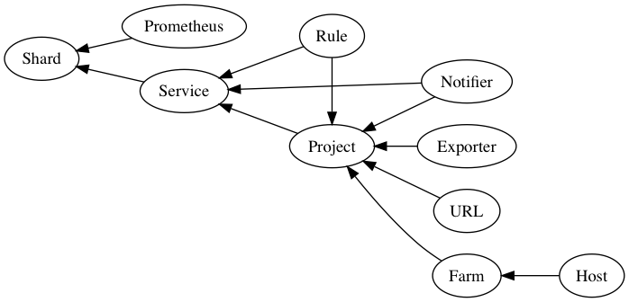

Glossary¶
Shard¶
Shards are the top level object in Promgen which contain both Services and Prometheus servers
Service¶
A service in Prometheus is a group of related Projects and are assigned to a specific shard
Projects¶
Projects are one of the main groupings for Promgen. This represents a typical monitoring target and brings together a collection of servers (Farm) with Exporters and URL endpoints
Farm¶
Farm is a group of servers. Farms may be updated using discovery plugins
Notifiers¶
Notifiers are used for routing messages to a specific destination such as Email or LINE Notify
Rule¶
Rules represent the rules that Prometheus itself uses for alerting